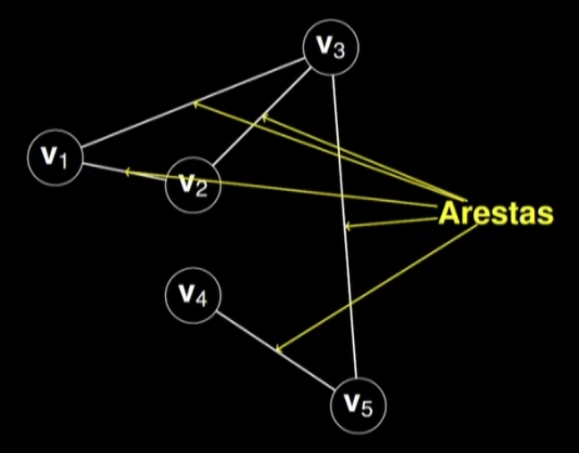
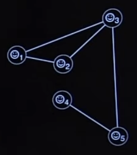
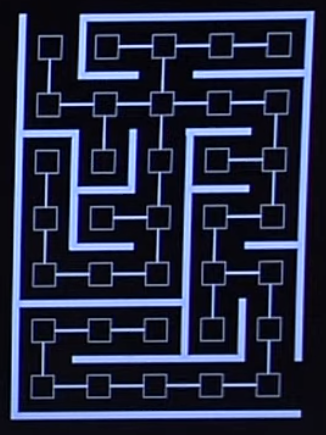
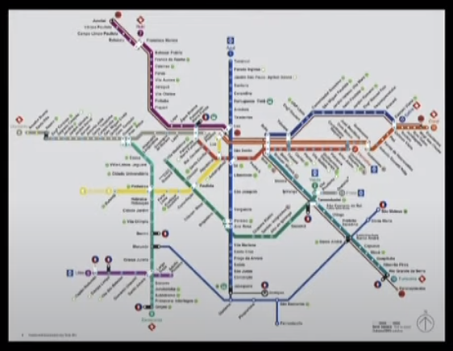
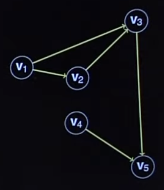
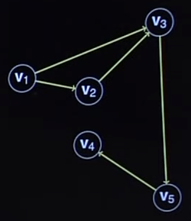
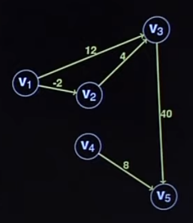
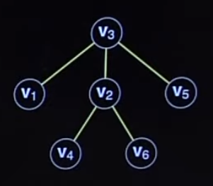

Disciplinas
-
ESTRUTURA DE DADOS-T01-2024-1 Concluído
Materiais
Vídeo 2 - Estrutura de Dados - Aula 23 - Grafos - Conceitos básicos. sendProf° ministrante: Norton T. Roman.
Conteúdo
Grafos - Conceitos básicos.
O que é um Grafo.
- Não... seguramente não.
- Grafos são estruturas matemáticas que permitem codificar relacionamentos entre pares de objetos.
- Os objetos são os vértices (ou nós) do grafo.
- Os relacionamentos são suas arestas
São representados como um conjunto de nós (vértices) conectados par a par por linhas (arestas)
E para que servem os Grafos?
- Sua imaginação é o limite
- Podem modelar conexões em redes sociais 
- Labirintos: 
- Rotas do metrô: 
Alguns grafos são dirigidos (ou direcionados).
- As relações representadas pelas arestas têm sentido definido
- As arestas só podem ser seguidas em uma única direção 
- Em Grafos Dirigidos, as arestas são pares ordenados de vértices
- Saindo de um em direção ao outro
- Mesmo que ambos sejam o mesmo vértice (self-loop)
Outros são não dirigidos (ou não direcionados).
- As relações representadas pelas arestas não têm sentido definido.
- As arestas podem ser seguidas em qualquer direção.
- Podemos pensar num grafo não dirigido como um grafo dirigido com arestas de sentido duplo.
- As arestas são pares não ordenados de vértices.
- Self-loops não são permitidos.
Grafos.
- Se (u, v) é uma aresta no grafo, então dizemos que vé adjacente a u.
- Alternativamente, que vé vizinho de u.
- (u, v) significa que a aresta sai de u e entra em v.
- Em grafos não dirigidos, a relação de adjacência é simétrica
- (u, v) ⇔ (v, u)
- Já em dirigidos, não necessariamente há tal simetria
- Há (V1, V2), mas não (V2, V₁)
- Em grafos não dirigidos, o grau de um vértice é o número de arestas que incidem nele.
- gr(v₁) = gr(v2) = gr(V5) 2
- gr(v3) = 3
- gr(v4) = 1
- Já em grafos dirigidos, o grau de um vértice é o número de arestas que saem do vértice mais o número de arestas que chegam nele.
- gr(v₁) = gr(v2) = gr(v5) = 2
- gr(v3) = gr(v₄) = 3
- No caso de grafos dirigidos, há dois tipos de graus de vértice:
- Grau de saída: número de arestas que saem do vértice.
- Grau de entrada: número de arestas que chegam no vértice.
Um caminho de um vértice x a um vértice y é uma sequência de vértices em que, para cada vértice, do primeiro ao penúltimo, há uma aresta ligando esse vértice ao próximo na sequência.
- No caso a cima, alguns caminhos são:
- (V1, V2, V3, V5)
- (V4, V5)
- (V1, V2, V3)
- (V4, V4, V5)
- O comprimento de um caminho é o número de arestas nele:
- compr(V1, V2, V3, V5) = 3
- compr(V4, V5) = 1
- compr(V1, V2, V3) = 2
- compr(V4, V4, V5) = 2
- Um ciclo acontece quando, a partir de um determinado vértice, pudermos percorrer algum caminho que nos leve a esse mesmo vértice.
- Em grafos dirigidos, o caminho deve conter pelo menos uma aresta
Em grafos não dirigidos, um ciclo deve conter pelo menos 3 arestas.
- Grafos em que há ao menos um ciclo são chamados de cíclicos.
- Grafos em que não há ciclos são chamados de acíclicos.
Um grafo não direcionado é conexo (ou conectado) se cada par de vértices nele estiver conectado por um caminho.
- O grafo a baixo é conexo Agora é desconexo.
Um grafo dirigido é fortemente conexo se existir um caminho entre qualquer par de vértices no grafo.
- Contém um caminho direto de u para v e um caminho direto de v para u para cada par de vértices (u, v).
Um grafo dirigido é conexo se possuir um caminho de u para v, ou um caminho de v para u, para cada par de vértices (u, v).
Um grafo dirigido é fracamente conexo se a substituição de todas as suas arestas por arestas não-direcionadas produz um grafo conexo.
- Ex: não há caminho de.
- V4 V3 nem de V3 → V4.
Grafos também podem ser ponderados.
Caso em que possuem pesos associados às suas arestas Esses pesos podem representar custos, distâncias etc.
Grafos A árvore..
Grafo acíclico.
Conexo.
Não-dirigido.
